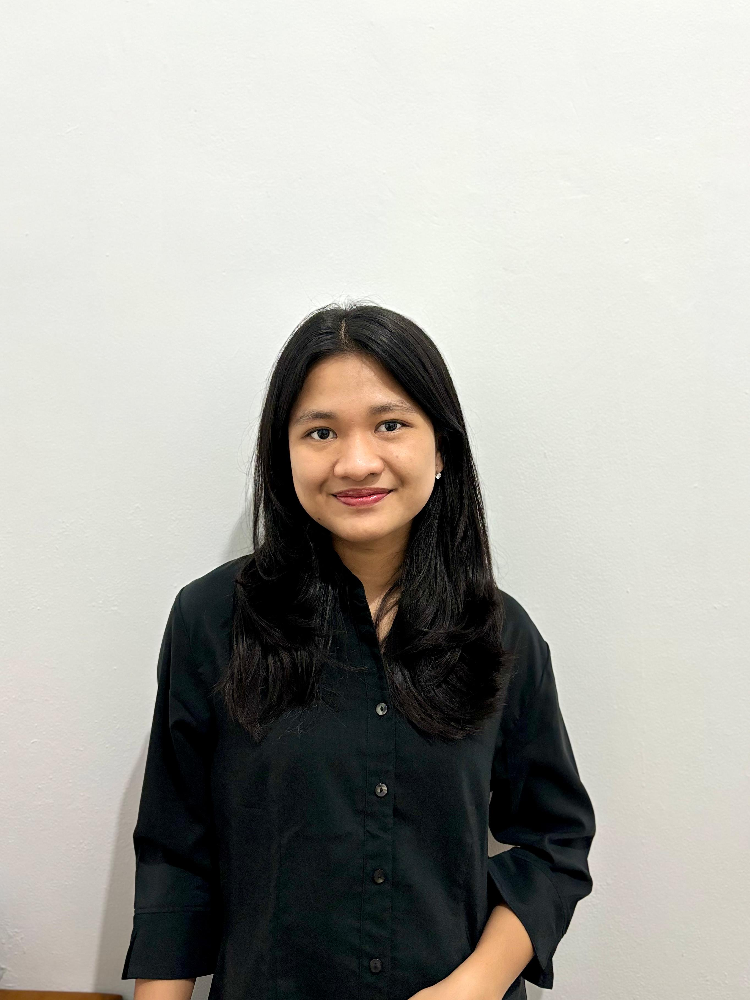

STEVY DEA PUTRI NATALI
Bandung, Jawa Barat
1202223389
steydea@gmail.com
LinkedIn Stevy
TENTANG SAYA
Mahasiswa S1 Sistem Informasi yang bermotivasi tinggi dengan minat besar di bidang teknologi
bisnis. Memiliki kemampuan adaptasi cepat, komunikasi efektif, dan jiwa kepemimpinan yang
teruji. Aktif mencari peluang pengembangan diri dan pengalaman baru. Berkomitmen untuk
terus mengasah keterampilan guna menjadi profesional yang kompeten di era digital.
PENGALAMAN ORGANISASI
Staff Alpha BPMSI
Oktober 2023-Januari 2024
Anggota Divisi Internal Perhubungan
- Bertanggung jawab terhadap Komunikasi Internal Panitia Pemilihan Umum Sistem Informasi 2024
- Menyiapkan Teks MC pada acara BPMSI Menyapa
ERP LABORATORY TELKOM UNIVERSITY
Maret 2024 - Sekarang
Anggota Divisi Competition
- Bertanggung jawab terhadap program kerja competition training
- Bertanggung jawab membuat link untuk registrasi, absensi dan Feedback
PENDIDIKAN
Sekolah Menengah Atas
2018-2021
SMAN 3 Tambun Selatan
Peminatan Matematika dan Ilmu Pengetahuan Alam (MIPA)
S1 Sistem Informasi
2022-Sekarang
Telkom University
IPK = 3.83